In dem Register "Artikelmatch" kann durch Eingabe eines Suchbegriffs innerhalb der Artikelnummer und der Artikelbezeichnung gesucht werden.
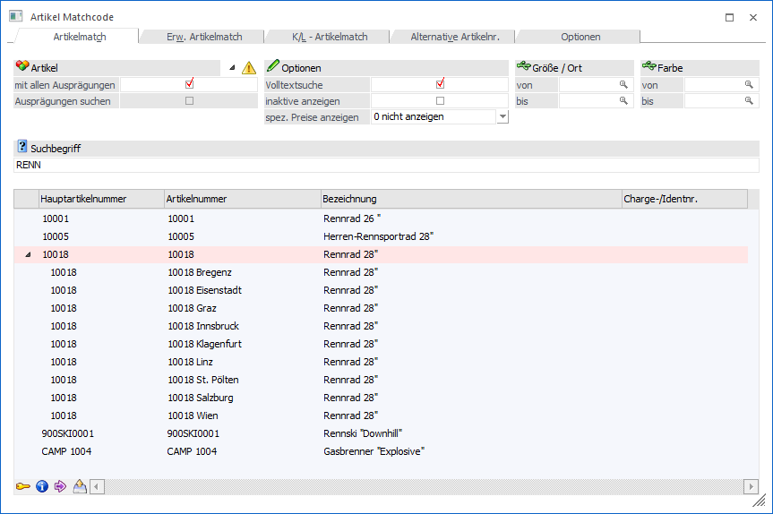
Ansicht
Ø Erweiterte Ansicht
Der Matchcode kann über zwei unterschiedliche Ansichten durchgeführt werden, wobei zwischen den Ansichten über den Button "Erweiterte Ansicht" gewechselt werden kann:
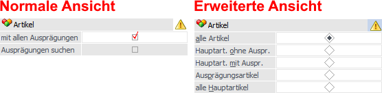
ü Normale Ansicht
In der
"normalen" Ansicht werden die Sucheinstellungen aus den Ausprägungsoptionen
(WinLine FAKT - Stammdaten - Ausprägungen - Ausprägungsoptionen - Register
"Details" - Unterregister "Suchen" - Option "Artikelmatchcode") genutzt.
ü Erweiterte Ansicht
In der
"erweiterten" Ansicht werden die Sucheinstellungen aus den Ausprägungsoptionen
(WinLine FAKT - Stammdaten - Ausprägungen - Ausprägungsoptionen - Register
"Details" - Unterregister "Suchen" - Option "Artikelmatchcode") nicht
genutzt.
Artikel (normale Ansicht)
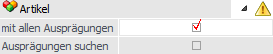
In dem Bereich kann definiert werden, wie die Artikel in der Suchergebnistabelle angezeigt werden sollen und wonach bzw. wie gesucht werden soll.
Ø 
 alle Ausprägungen ein- bzw.
ausblenden
alle Ausprägungen ein- bzw.
ausblenden
Durch Anwahl dieses Buttons werden im Matchcode alle Ausprägungen ein- bzw. ausgeblendet.
Hinweis
Voraussetzung für die Anzeige des Buttons ist, dass mit der "normalen" Ansicht gearbeitet wird, die Option "mit allen Ausprägungen" aktiviert wurde und in der Ergebnistabelle zumindest ein Hauptartikel des Typs "Hauptartikel mit Ausprägungen" mit der Artikeltypeinstellung "1 - Hauptartikel anzeigen und Ausprägungen suchen" ausgewiesen wird.
Ø mit allen Ausprägungen
Bei Aktivierung dieser Option werden alle Ausprägungen mit
der Artikeltypeinstellung "1 - Hauptartikel anzeigen und Ausprägungen suchen"
eingerückt unter dem Hauptartikel dargestellt und können bei Bedarf mit der
Taste F9 oder durch Anwahl des Symbols ein- bzw. ausgeblendet werden.
Wenn die Option nicht aktiviert wurde, dann wird nur der
Hauptartikel angezeigt und durch Anwahl der Taste F9 oder des Symbols kann bei dieser Anzeigevariante in die
sogenannte "Gefilterte Ansicht" gewechselt werden. In dieser werden dann die
Ausprägungen angezeigt und es kann nach bestimmten Ausprägungen gesucht
werden.
Hinweis
Nähere Informationen zu der Artikeltypeinstellung "1 - Hauptartikel anzeigen und Ausprägungen suchen" entnehmen Sie bitte dem Kapitel Ausprägungsoptionen - Register "Details" - Unterregister "Suchen".
Ø Ausprägungen suchen
Durch Aktivierung dieser Option bleibt der Matchcode auch dann geöffnet, wenn in der Ergebnistabelle nur ein Hauptartikel des Typs "Hauptartikel mit Ausprägungen" mit der Artikeltypeinstellung "1 - Hauptartikel anzeigen und Ausprägungen suchen" (Option "mit allen Ausprägungen" ist deaktiviert) angezeigt wird. Hierdurch wird ein möglicher Wechsel in die gefilterte Ansicht ermöglicht.
Hinweis
Wenn als Suchergebnis nur ein Artikel ohne Ausprägungen herausfällt, dann wird dieser immer direkt in das Feld "Artikelnummer" übernommen.
Artikel (erweiterte Ansicht)
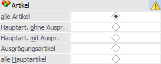
In dem Selektionsbereich kann definiert werden wonach bzw. wie gesucht werden soll.
Hinweis
Die erweiterte Ansicht muss zunächst über den Button "Erweiterte Ansicht" aktiviert werden.
Ø Artikel
An dieser Stelle kann die Artikelart selektiert werden, in welchem gesucht werden soll. Zur Auswahl stehen folgende Möglichkeiten:
ü alle Artikel
ü Hauptartikel ohne Ausprägungen
ü Hauptartikel mit Ausprägungen
ü Ausprägungsartikel
ü alle Hauptartikel
Optionen
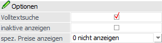
Ø Volltextsuche
Standardmäßig erfolgt die Suche linksbündig. Durch Aktivierung der Option "Volltextsuche" wird der Suchbegriff innerhalb des gesamten Wertes gesucht.
Beispiel
Es wird im Namen der Suchbegriff "rad" eingegeben. Erfolgt die Suche ohne Volltext, dann wird der Suchbegriff "rad%" übergeben. Wird die Suche hingegen mit Volltext durchgeführt, dann wird der Suchbegriff "%rad%" übergeben.
Ø inaktive anzeigen
Durch Aktivierung dieser Option werden auch inaktive Artikel in der Ergebnistabelle angezeigt.
Ø spez. Preise anzeigen
Diese Einstellung steht nur zur Verfügung, wenn der Matchcode aus der Belegerfassung heraus geöffnet wurde und dient zur Anzeige von Gruppen- bzw. Kontenspezifischen Preisen.
ü 0 - nicht anzeigen
Es werden
keine Hinweise auf Gruppen- bzw. Kontenspezifische Preise ausgewiesen.
ü 1 - Symbol in der Tabelle
anzeigen
Es wird in einer extra Spalte der Ergebnistabelle per Symbol
dargestellt, ob für das Personenkonto bzw. dessen Gruppe ein besonderer Preis im
Artikelstamm hinterlegt wurde.
ü 2 - Preise in der Infoliste
anzeigen
Neben dem Symbol (siehe Einstellung "1 - Symbol in der Tabelle
anzeigen") werden in der optional zu aktivierenden Artikelinfo alle aktuell
gültigen Preislisteneinträge (für das Personenkonto) angezeigt.
Hinweis
Aus der Artikelinfo heraus kann
direkt zu dem Preis im Artikelstamm gewechselt werden (1.) oder der Artikel samt
des gewünschten Preises in die Belegerfassung übernommen werden
(2.).
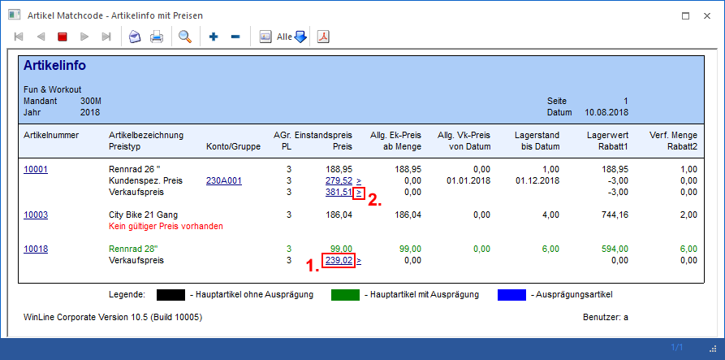
Ausprägungen
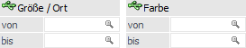
Ø Ausprägung 1 (hier "Größe / Ort") / Ausprägung 2 (hier "Farbe")
An dieser Stelle kann eine Selektion auf die Ausprägungen vorgenommen werden.
Hinweis
Dieser Selektionsbereich steht in der "erweiterten" Ansicht nur zur Verfügung, wenn auf die Artikelart "Ausprägungen" eingeschränkt wurde.
Suchbegriff
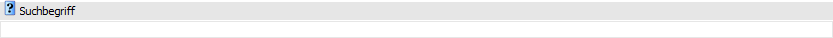
Ø Suchbegriff
Durch Eingabe und Bestätigung eines Suchbegriffs wird in der Artikelnummer und der Artikelbezeichnung gesucht und die Suchergebnistabelle entsprechend aufgebaut.
Hinweis
Wenn nur in der originalen Artikelnummer und nicht zusätzlich auch in der Ausprägungsartikelnummer gesucht werden soll, dann kann dieses über das Kontextmenü der rechten Maustaste (Punkt "Suche in der Anzeigeartikelnummer") definiert werden. Diese Einstellung wird benutzerspezifisch gespeichert.
Tabelle "Suchergebnis"
In der Tabelle werden nach Auslösen der Suche (Button "Anzeigen" oder Suchbegriff bestätigen) die gefundenen Artikel angezeigt. Per Doppelklick oder Enter-Taste kann der ausgewählte Artikel anschließend in das Ausgangsfenster übernommen werden. Die Darstellung von Ausprägungen ist u.a. abgängig von der gewählten Ansicht.
ü Normale Ansicht
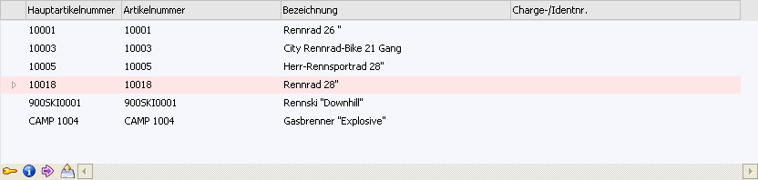
ü Erweiterte Ansicht
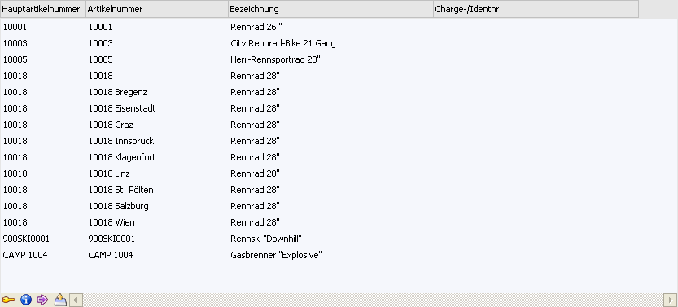
In der Ergebnistabelle werden standardmäßig immer (egal ob "normale" oder "erweiterte" Ansicht) folgende Spalten angezeigt:
Ø Hauptartikelnummer
In dieser Spalte wird die Hauptartikelnummer des Artikels angezeigt.
Ø Artikelnummer
An dieser Stelle wird die Artikelnummer des Artikels dargestellt.
Ø Bezeichnung
Hier wird die Bezeichnung des Artikels angezeigt.
Ø Charge- / Identnummer
Handelt es sich um einen Artikel mit Chargen- bzw. Identnummer, so wird hier die jeweilige Nummer dargestellt.
Ø Spezifischer Preis vorhanden
Bei Aktivierung der Option "spez. Preise anzeigen" (Auswahl ungleich "0 - nicht anzeigen") wird in dieser Spalte per Symbol angezeigt, ob Spezialpreise für das Personenkonto vorliegen.
ü - Kunden- bzw. Lieferantengruppenpreis
ü - Kunden- bzw. Lieferantenspezifischer Preis
Hinweis
Über das Kontextmenü der rechten Maustaste kann mit Hilfe des Punkts "Preisinfo" eine detaillierte Preisinformation am Bildschirm ausgegeben werden.
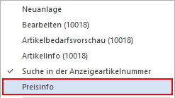
Ø Optionale Spalten
Neben den Standard-Spalten können über das Kontextmenü der rechten Maustaste (Funktion "Spalten anzeigen / verstecken") jederzeit folgende Spalten hinzugefügt bzw. entfernt werden:
ü Zeilennr.
Es wird pro Datensatz
(Artikelzeile) eine aufsteigende Nummer angezeigt. Wenn der Fokus in der Spalte
liegt kann anschließend durch Eingabe der Nummer direkt zum Datensatz gewechselt
werden.
Hinweis
Wenn der Fokus in der Spalte liegt kann durch Anwahl der Taste F2 definiert werden, ob die Spalte "linksbündig", "zentriert" oder "rechtsbündig" angezeigt werden soll.
ü Lagerstand / Lagerstand2
Es
wird pro Artikelzeile der aktuelle Lagerstand angezeigt. Die Menge wird dabei
immer mit 2 Nachkommastellen ausgewiesen.
ü Lagerwert
Es wird pro
Artikelzeile der aktuelle Lagerwert angezeigt. Der Betrag wird dabei immer mit 2
Nachkommastellen ausgewiesen.
Tabellenbuttons
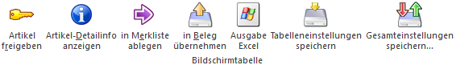
Ø Artikel freigeben
Bei Anwahl des Buttons "Freigeben" wird der Programmbereich "Freigabe" geöffnet, in welchem die Freigabe des markierten Artikels geändert werden kann.
Ø Artikel-Detailinfo anzeigen
Durch Anklicken des Buttons "Artikel-Detailinfo anzeigen" wird die "Artikel-Detailinfo" geöffnet. In dieser werden detaillierte Lagerinformationen des markierten Artikels dargestellt.
Ø in Merkliste ablegen
Durch Anklicken des Buttons "in Merkliste ablegen" werden die zuvor selektiert Einträge in eine Merkliste / Kampagne übergeben.
Ø in Beleg übernehmen
Durch Anwahl dieses Buttons werden alle selektierten Artikelzeilen aus der Ergebnistabelle in die Belegerfassung übernommen. Neben der Anwahl des Buttons ist dieses auch per "STRG + Drag & Drop" möglich.
Hinweis
Diese Funktion steht in den folgenden Programmbereichen zur Verfügung:
ü Belege erfassen
ü Telesales
ü Kontrakt erfassen
ü Kontrakte abbuchen
Ø Ausgabe Excel
Durch Anwahl des Buttons "Ausgabe Excel" wird der Inhalt der Tabelle an Microsoft Excel übergeben.
Ø Tabelleneinstellungen speichern
Die Spalten einer Tabelle können grundsätzlich an beliebige Positionen verschoben, bzw. in der Breite entsprechend angepasst werden. Durch Anwahl des Buttons "Tabelleneinstellungen speichern" werden die Einstellungen benutzerspezifisch gespeichert und bei dem nächsten Aufruf des Programmpunktes wieder vorgeschlagen.
Ø Gesamteinstellungen speichern
Im Gegensatz zu "Tabelleneinstellungen speichern" können mit "Gesamteinstellungen speichern" mehrere Tabellenaufbauten gespeichert und nach Wunsch geladen werden. Zusätzlich werden Sonderfunktionen der Tabelle (z.B. "Spalte gruppieren") ebenfalls bei der Speicherung bedacht.